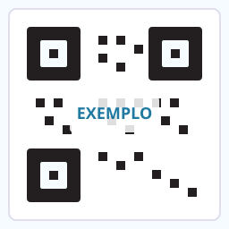

Como ajudar
Sua participação faz a diferença
Doação via PIX
A forma mais rápida e direta de ajudar

Escaneie com o app do seu banco
CNPJ: 17.451.380/0001-83
Associação Marauense da Pessoa com Deficiência - AMPD
Nota: A chave PIX e o QR Code acima são placeholders e precisam ser confirmados pela diretoria da AMPD.
Nota Fiscal Gaúcha
Doe seus créditos sem gastar nada
A AMPD é habilitada no programa Nota Fiscal Gaúcha da SEFAZ/RS. Você pode doar seus créditos acumulados para a associação de forma simples e gratuita.
Como doar:
- 1Acesse o site da SEFAZ/RS ou o app Nota Fiscal Gaúcha
- 2Faça login com seu CPF
- 3Vá em "Doação" e busque por "AMPD" ou "Associação Marauense"
- 4Escolha o valor e confirme a doação
Importante: Os créditos do Nota Fiscal Gaúcha que você doa não saem do seu bolso — são gerados pela participação no programa. É uma forma de apoiar a AMPD sem custos!
Seja Voluntário
Doe seu tempo e talento
A AMPD está sempre aberta a voluntários que queiram contribuir com seu tempo, habilidades e dedicação para promover inclusão e autonomia.
Áreas em que você pode ajudar:
- Apoio nas oficinas do Centro de Atendimento
- Atividades recreativas e culturais
- Comunicação e redes sociais
- Organização de eventos e campanhas
- Apoio administrativo
Como se candidatar
Entre em contato conosco para saber mais sobre as oportunidades de voluntariado disponíveis.
Entrar em contatoParcerias e Empresas
Sua empresa pode fazer a diferença apoiando os projetos da AMPD através de:
Doações e patrocínios
Apoio financeiro para projetos e atividades
Cumprimento da Lei de Cotas
Parceria para inclusão no mercado de trabalho
Incentivos fiscais
Possibilidade de dedução fiscal em doações
Responsabilidade social
Fortalecimento da marca com ações de inclusão
Associe-se à AMPD
Faça parte da nossa comunidade
Torne-se associado da AMPD e participe ativamente das decisões e ações da associação. Associados têm direito a voto nas assembleias e podem concorrer a cargos na diretoria.
Benefícios de ser associado:
- Participação nas Assembleias Gerais
- Direito a voto nas decisões da associação
- Possibilidade de concorrer à Diretoria
- Fazer parte de uma comunidade engajada
Atenção: Valores de mensalidade e requisitos para associação não foram encontrados em fontes públicas. Entre em contato com a AMPD para obter essas informações.